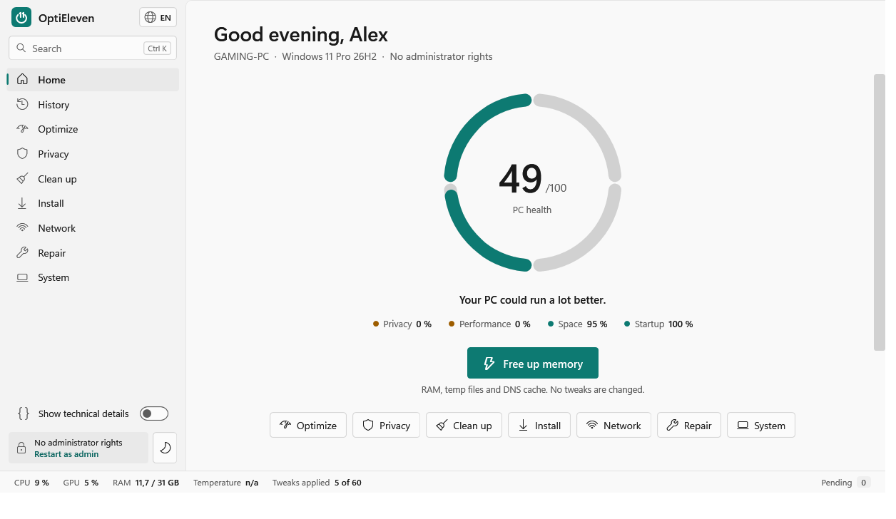

Your Windows 11, in one place.
Clean up, free memory, tune privacy and performance, install apps and repair Windows. Every change can be undone.
Open it with PowerShell
irm optieleven.app | iexRight-click Start, open Terminal, paste it and press Enter. It downloads the latest version, checks it and opens the panel.
or
Windows 11 · Free and open source (MIT) · Unzip it and open OptiEleven.

- A health score for your PC, and one button to free memory and temp files.
- 60 tweaks for privacy, performance and games, each one with what it changes.
- History of every change with its date, and undo for each one.
- Cleanup, disk space, app installer, network, repairs and a game session mode.